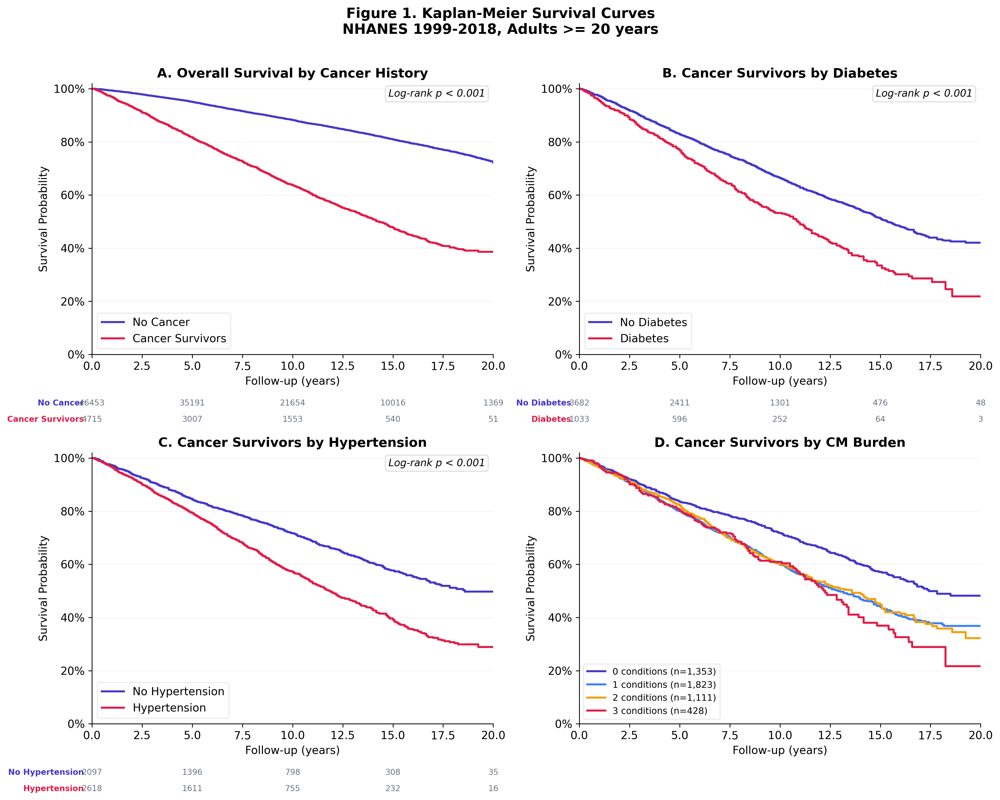
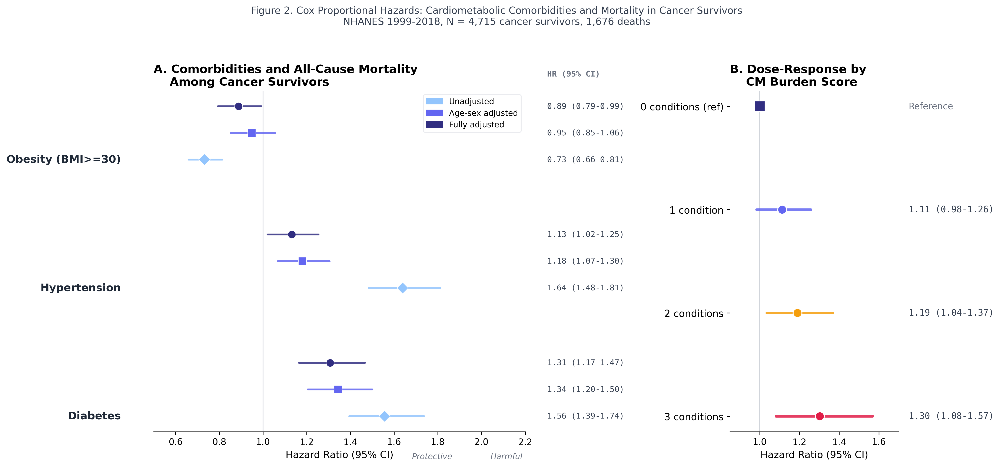
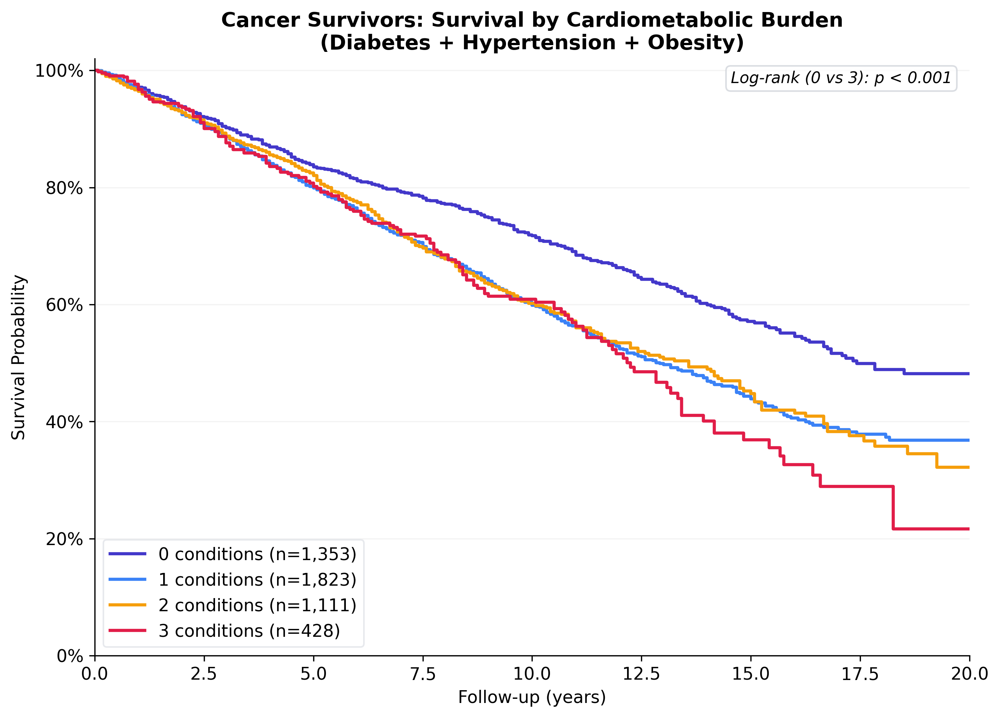
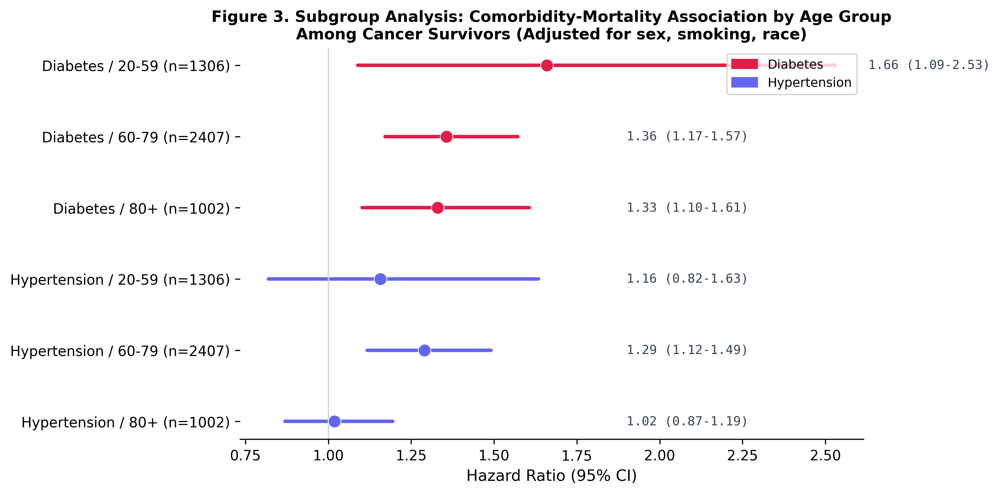
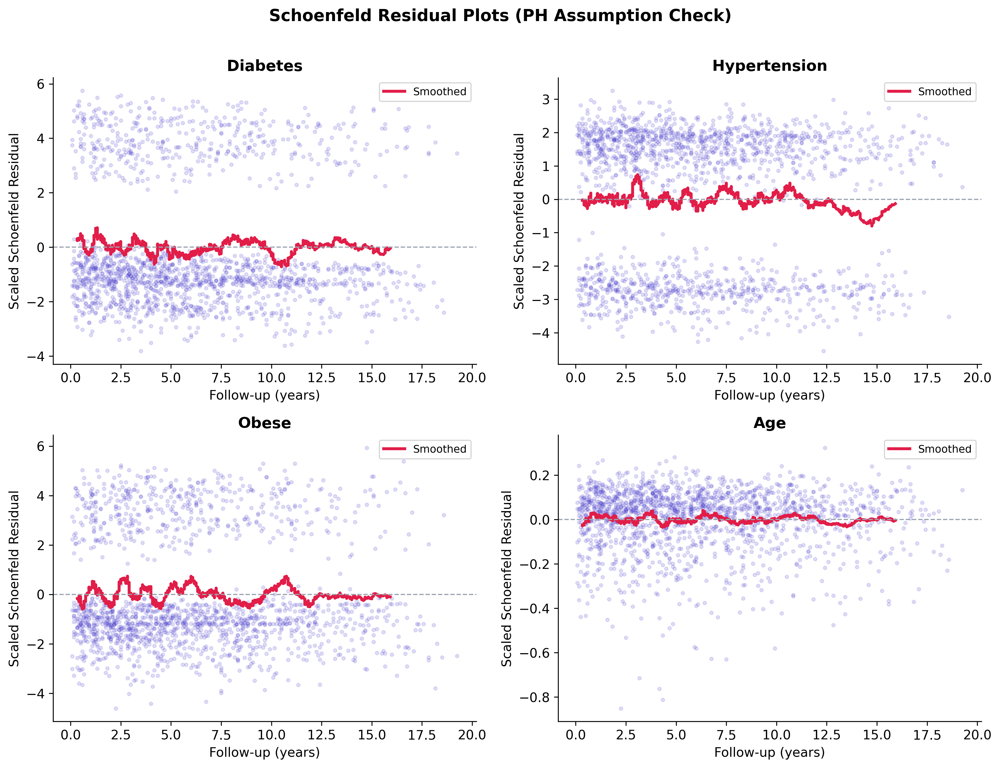
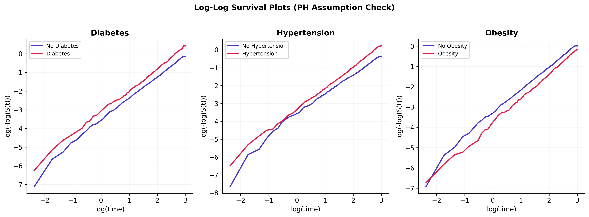
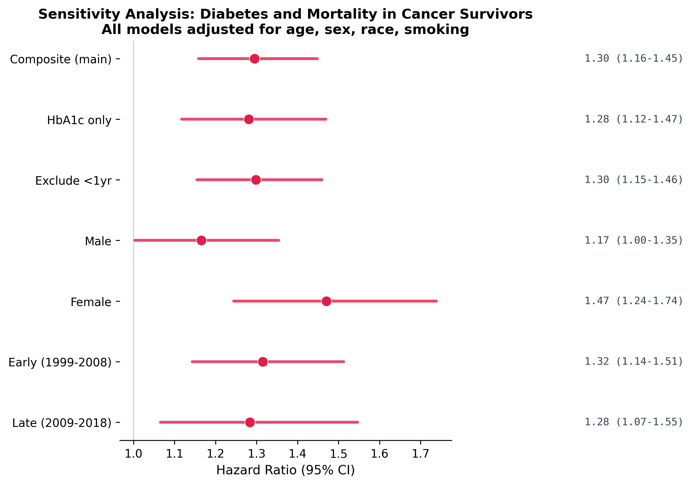

Among US adults with cancer, do cardiometabolic comorbidities independently predict mortality? A population-based cohort study using 20 years of NHANES linked mortality data.
As cancer treatment improves, more patients survive their primary diagnosis. But cancer survivors carry a high burden of cardiometabolic conditions: diabetes, hypertension, and obesity. These comorbidities may independently drive mortality in ways that aren't addressed by oncology-focused care. Understanding this is critical for survivorship programs, integrated care models, and risk stratification.
I pooled 10 NHANES survey cycles (1999-2018) with NCHS linked mortality files, constructing a nationally representative cohort of 51,168 adults including 4,715 cancer survivors. The analysis follows a full epidemiologic pipeline from cohort construction through sensitivity analyses.
Kaplan-Meier curves show clear separation in survival between cancer survivors with and without diabetes. The gap widens over follow-up time, consistent with the cumulative cardiovascular toll of uncontrolled glycemia.

Progressive Cox regression models show that diabetes remains a significant predictor of mortality even after adjusting for age, sex, race/ethnicity, and smoking. Hypertension is borderline significant. Obesity shows a paradoxical protective effect, consistent with published survivorship literature.
| Comorbidity | Adjusted HR | 95% CI | P |
|---|---|---|---|
| Diabetes | 1.31 | 1.17 - 1.47 | < 0.001 |
| Hypertension | 1.13 | 1.02 - 1.25 | 0.018 |
| Obesity (BMI >= 30) | 0.89 | 0.79 - 0.99 | 0.037 |
| Current smoking | 2.27 | 1.94 - 2.66 | < 0.001 |

Each additional cardiometabolic condition stacks the risk. Cancer survivors with all three conditions (diabetes + hypertension + obesity) have 30% higher mortality than those with none (HR 1.30, 95% CI 1.08-1.57). This dose-response relationship strengthens the causal argument.

| Burden | HR | 95% CI | P |
|---|---|---|---|
| 0 conditions (ref) | 1.00 | -- | -- |
| 1 condition | 1.11 | 0.98 - 1.26 | 0.088 |
| 2 conditions | 1.19 | 1.04 - 1.37 | 0.014 |
| 3 conditions | 1.30 | 1.08 - 1.57 | 0.005 |
Subgroup analysis reveals that the diabetes-mortality association is strongest among younger cancer survivors (age 20-59: HR 1.66) and attenuates with age (60-79: HR 1.36, 80+: HR 1.33). This has direct implications for survivorship screening guidelines.

Schoenfeld residual tests confirm the PH assumption is met for all primary exposures. The log-log plots show parallel curves. This validates the Cox model specification and supports the stability of the reported hazard ratios over the full follow-up period.


The diabetes-mortality association persists across every sensitivity test: alternative diabetes definitions (HbA1c-only), exclusion of early deaths (first 2 years), sex-stratified models, and time-period stratification. This consistency strengthens confidence in the primary finding.

| Finding | Implication |
|---|---|
| Diabetes HR 1.31, independent of cancer | Survivorship programs should integrate glycemic management alongside tumor surveillance |
| Dose-response with comorbidity burden | Risk stratification models for cancer survivors should include cardiometabolic conditions, not just cancer stage |
| Strongest in younger survivors (HR 1.66) | Early-onset diabetes screening should be prioritized in younger cancer survivor populations |
| Obesity paradox (HR 0.89) | BMI alone is a poor risk marker in cancer survivors; body composition or sarcopenia measures may be more informative |
| Current smoking HR 2.27 | Smoking cessation remains the single highest-yield intervention in survivorship care |
Pooled 10 NHANES cycles (1999-2018) by merging 7 survey components per cycle (demographics, cancer history, diabetes, body measures, blood pressure, smoking, HbA1c) with fixed-width mortality linkage files. Custom parser handles concatenated follow-up fields in the mortality data. Cancer defined as self-reported physician diagnosis (MCQ220). Diabetes defined as composite: physician diagnosis OR HbA1c >= 6.5%. Cox models with progressive adjustment (unadjusted, age-sex, fully adjusted). Schoenfeld residuals for PH diagnostics. 8 notebooks, 16 publication-quality figures.
Interested in cancer epidemiology, real-world evidence, or survivorship research?
Get in touch